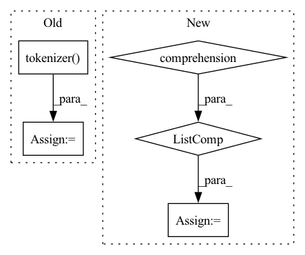

Pattern ID :22071
Before Change
source_text = batch_data["source_text"]
for text in source_text:
text = " ".join(text)
encoding_dict = self.tokenizer( text, return_tensors="pt")
input_ids = encoding_dict["input_ids"].to(self.device)
output_ids = self.model.generate(input_ids, max_length=self.max_target_length, early_stopping=True)
After Change
input_ids, attention_mask=attn_masks, num_beams=5, max_length=self.max_target_length, early_stopping=True
)
generated_text = self.tokenizer.batch_decode(sample_outputs, skip_special_tokens=True)
generate_corpus = [text.lower().split() for text in generated_text]
return generate_corpus
def tokenize_text(self, text):
input_ids = []In pattern: SUPERPATTERN
Frequency: 4
Non-data size: 5
Instances Fragment ID: 70016509
Project Name: rucaibox/textbox
Commit Name: 47a1a3dc1eee71dd585124dbf1786e2508d34561
Time: 2021-04-15
Author: 1020139164@qq.com
File Name: textbox/model/Seq2Seq/prophetnet.py
M Class Name: ProphetNet
N Class Name: ProphetNet
M Method Name: generate(3)
N Method Name: generate(3)
M Parent Class: Seq2SeqGenerator
N Parent Class: Seq2SeqGenerator
M File Name: textbox/model/Seq2Seq/prophetnet.py
N File Name: textbox/model/Seq2Seq/prophetnet.py
M Start Line: 38
M End Line: 50
N Start Line: 38
N End Line: 45
Before Change
source_text = batch_data["source_text"]
for text in source_text:
sentence = " ".join(text)
encoding_dict = self.tokenizer( sentence, return_tensors="pt")
input_ids = encoding_dict["input_ids"].to(self.device)
sample_outputs = self.decoder.generate(
input_ids, num_beams=5, max_length=self.max_target_length, early_stopping=True
)After Change
input_ids, attention_mask=attn_masks, num_beams=5, max_length=self.max_target_length, early_stopping=True
)
generated_text = self.tokenizer.batch_decode(sample_outputs, skip_special_tokens=True)
generate_corpus = [text.lower().split() for text in generated_text]
return generate_corpus
def tokenize_text(self, text):
texts = [" ".join(t) for t in text] Fragment ID: 70016517
Project Name: rucaibox/textbox
Commit Name: 47a1a3dc1eee71dd585124dbf1786e2508d34561
Time: 2021-04-15
Author: 1020139164@qq.com
File Name: textbox/model/Seq2Seq/bart.py
M Class Name: BART
N Class Name: BART
M Method Name: generate(3)
N Method Name: generate(3)
M Parent Class: Seq2SeqGenerator
N Parent Class: Seq2SeqGenerator
M File Name: textbox/model/Seq2Seq/bart.py
N File Name: textbox/model/Seq2Seq/bart.py
M Start Line: 43
M End Line: 54
N Start Line: 41
N End Line: 48
Before Change
preds = []
for cur_queries, cur_docs in batches:
features = self.tokenizer(
cur_queries,
[doc.content for doc in cur_docs],
max_seq_len=self.max_seq_len,
pad_to_max_seq_len=True,
truncation_strategy="longest_first",
)
tensors = {k: paddle.to_tensor(v) for (k, v) in features.items()}
with paddle.no_grad():
if self.use_en:After Change
else:
datasets.append([query, doc.content])
outputs = self.transformer_model(datasets)
similarity_scores = [item["similarity"] for item in outputs]
preds.extend(similarity_scores)
for doc, rank_score in zip(cur_docs, similarity_scores):
doc.rank_score = rank_score Fragment ID: 70016512
Project Name: paddlepaddle/paddlenlp
Commit Name: 35be940d8e29d002d830da63c5923f63b0ec4d5d
Time: 2023-03-06
Author: w5688414@gmail.com
File Name: pipelines/pipelines/nodes/ranker/ernie_ranker.py
M Class Name: ErnieRanker
N Class Name: ErnieRanker
M Method Name: predict_batch(5)
N Method Name: predict_batch(5)
M Parent Class: BaseRanker
N Parent Class: BaseRanker
M File Name: pipelines/pipelines/nodes/ranker/ernie_ranker.py
N File Name: pipelines/pipelines/nodes/ranker/ernie_ranker.py
M Start Line: 159
M End Line: 177
N Start Line: 150
N End Line: 159
Before Change
if top_k is None:
top_k = self.top_k
features = self.tokenizer(
[query for doc in documents],
[doc.content for doc in documents],
max_seq_len=self.max_seq_len,
pad_to_max_seq_len=True,
truncation_strategy="longest_first",
)
tensors = {k: paddle.to_tensor(v) for (k, v) in features.items()}
with paddle.no_grad():
if self.use_en:After Change
else:
datasets.append([query, doc.content])
outputs = self.transformer_model(datasets)
similarity_scores = [item["similarity"] for item in outputs]
for doc, rank_score in zip(documents, similarity_scores):
doc.rank_score = rank_score
doc.score = rank_score Fragment ID: 70016515
Project Name: paddlepaddle/paddlenlp
Commit Name: 35be940d8e29d002d830da63c5923f63b0ec4d5d
Time: 2023-03-06
Author: w5688414@gmail.com
File Name: pipelines/pipelines/nodes/ranker/ernie_ranker.py
M Class Name: ErnieRanker
N Class Name: ErnieRanker
M Method Name: predict(4)
N Method Name: predict(4)
M Parent Class: BaseRanker
N Parent Class: BaseRanker
M File Name: pipelines/pipelines/nodes/ranker/ernie_ranker.py
N File Name: pipelines/pipelines/nodes/ranker/ernie_ranker.py
M Start Line: 98
M End Line: 115
N Start Line: 97
N End Line: 104